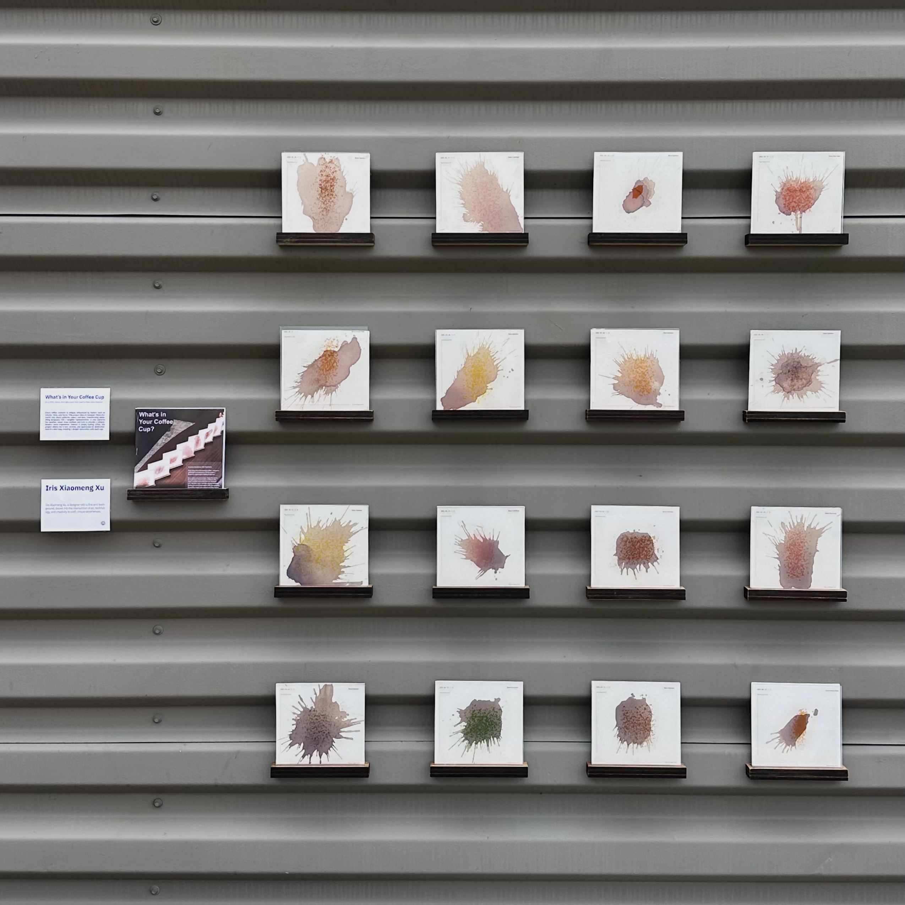
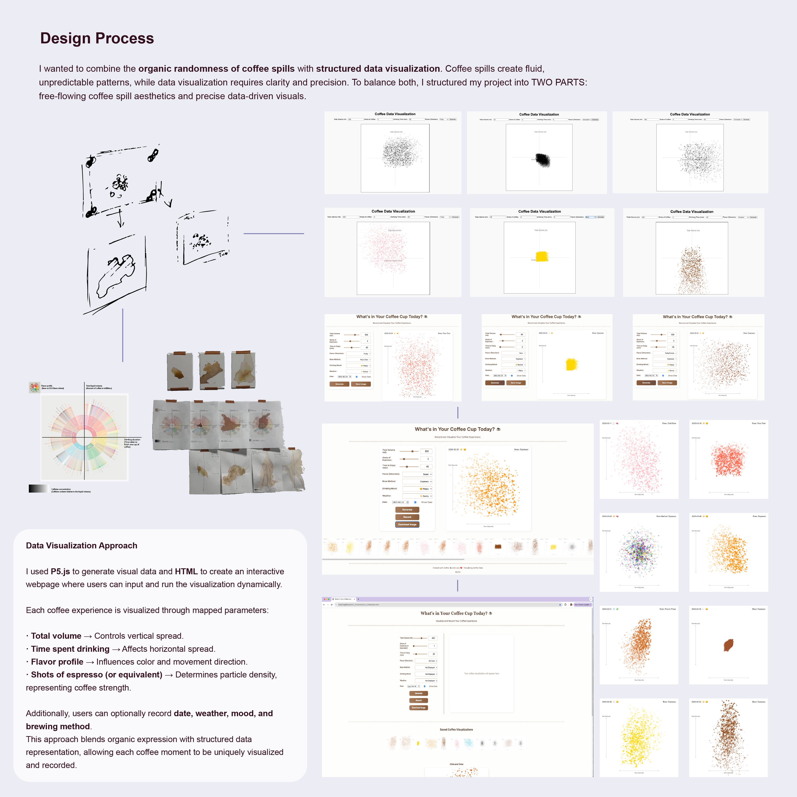
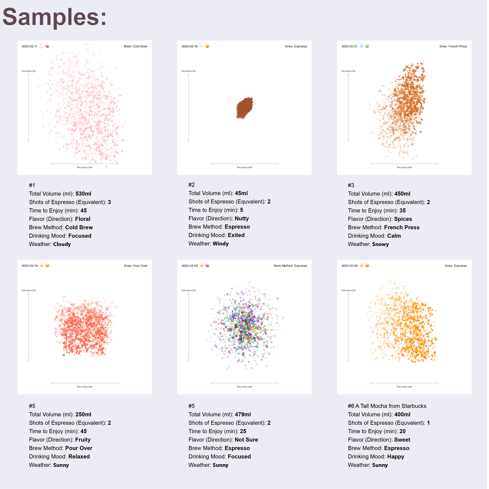

2025
What’s in Your Coffee Cup?
This project captures the sensory essence of daily coffee rituals through data visualization. Instead of focusing solely on taste, it explores how each cup reflects a unique moment—shaped by the total liquid volume, time spent drinking, flavor notes, and coffee strength.
Using p5.js, these elements are translated into generative patterns—dots, lines, and colors—mapped directly from real-life data. Paired with handcrafted acrylic layers and coffee-stained canvas prints, the project creates a tangible archive of ephemeral experiences, blending code and materiality to honor the richness behind each cup.

Concept

Generative System


Physical Translation